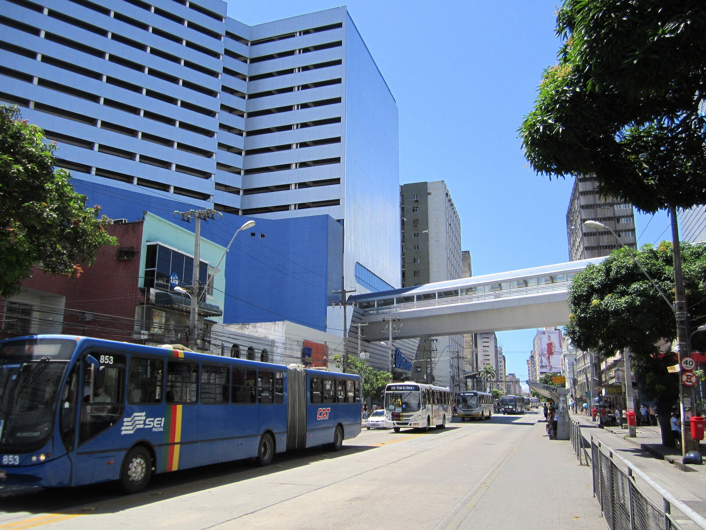
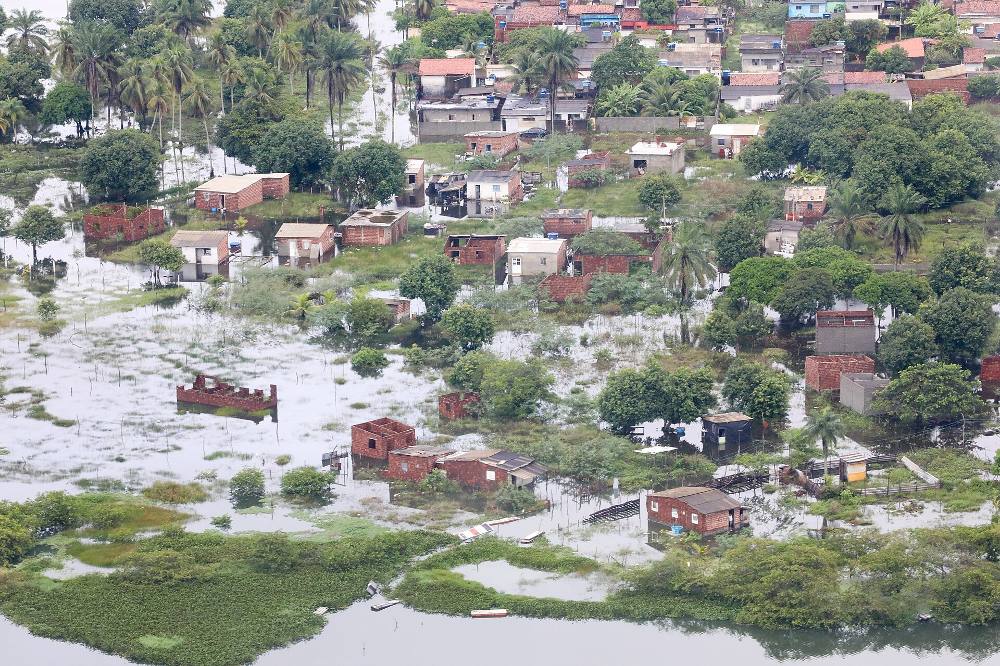
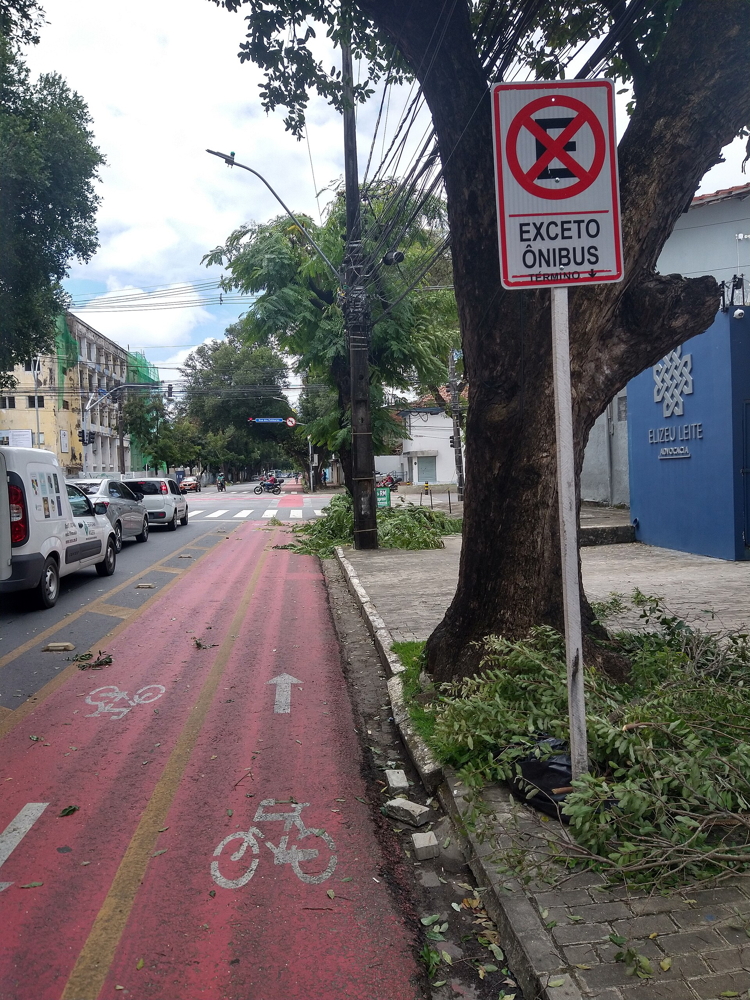
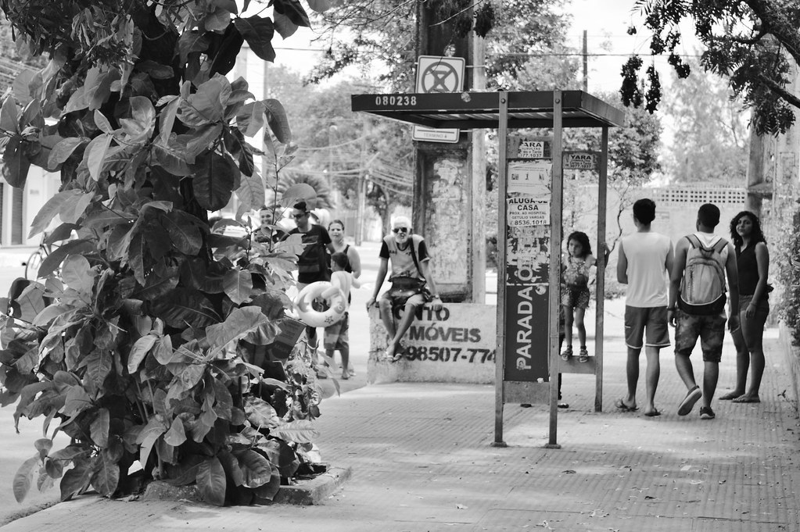
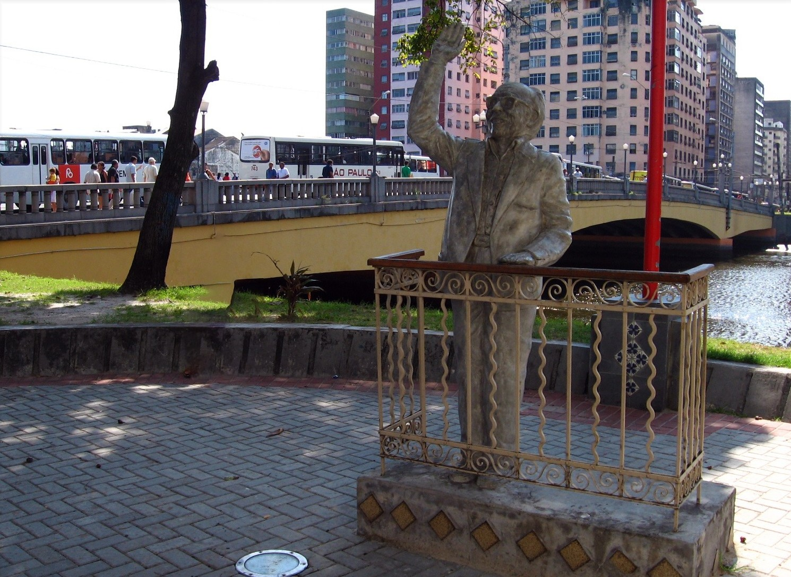

Derby
49 linhas de ônibus e 4 de BRT dividem o mesmo eixo. O passageiro decide no ponto qual delas serve.
Prefeitura do Recife, 2018 (Artefato I, N7)
Um canal só com os avisos de obra, desvio e chuva da Av. Conde da Boa Vista, no Recife, antes do pico.
Na Conde da Boa Vista  
Do Derby à Ponte Duarte Coelho, nos picos de 7h às 9h e de 17h às 19h. Role para andar pela avenida.
Derby
49 linhas de ônibus e 4 de BRT dividem o mesmo eixo. O passageiro decide no ponto qual delas serve.
Prefeitura do Recife, 2018 (Artefato I, N7)
Rua do Hospício
Em 2024, a obra foi da Emlurb, o desvio da CTTU e o aviso do Grande Recife: 184 cartazes em 21 paradas.
Interdição de 22/04 a 16/07/2024 (Artefato I, N1, N6, N9)
Shopping Boa Vista
Sem um lugar só para olhar, a mudança é descoberta no ponto, quando a pessoa já saiu de casa.
Entrevistas de 14 e 18/09/2026 (Artefato I, Pilar 2)
Ponte Duarte Coelho
A aposta: um canal que republica os avisos oficiais, com a fonte citada, antes de a pessoa sair.
Tensão T4: centralização da informação × fragmentação institucional
O usuário do programa é o plantonista da curadoria. O passageiro só recebe o boletim, sem app e sem cadastro.
O plantonista lê Grande Recife, CTTU, CBTU e APAC e registra só o que afeta as paradas do trecho.

Outra pessoa confere o aviso. O autor não pode checar o próprio aviso (RN06).
O programa gera o boletim em texto puro, que o plantonista cola no canal de WhatsApp. Exemplo com dados fictícios.
Um aviso só é útil se sai até 60 minutos antes do pico que o evento atinge. Para obra programada, o prazo é 20h da véspera.
Teste com os critérios de aceitação CA10 a CA12, ou mude os horários. A conta é a mesma do programa em Python (RN08).
—
—
60 min
de antecedência antes do pico: o prazo para um aviso mudar a decisão de quem ainda está em casa.
184
cartazes em 21 paradas na interdição da Rua do Hospício, em 2024.
4
órgãos com canais separados: Grande Recife, CTTU, CBTU e APAC.

Tipo, fonte, o quê, linhas, onde, início, fim, link e horário na fonte (RF01).
Fonte, tipo ou parada fora da lista voltam com as opções aceitas (RF02).
Um segundo integrante confere antes de qualquer publicação (RF03).
Checado ou não, horário na fonte, no canal e antecedência (RF04).
6h30 ou 16h30, ou "Sem mudanças hoje" quando não há aviso (RF05).
Grava o horário no canal uma vez, no primeiro boletim (RF06).
Útil na fonte, útil no canal e o atraso em minutos (RF07).
Percentual útil, atraso médio e contagem por tipo de aviso (RF08).
Tudo em avisos.csv, que abre no Excel ou no Google Planilhas (RF09).
Python 3 puro, sem bibliotecas externasSem internet e sem serviço pago16 testes para os critérios CA01 a CA14
Só fontes oficiaisArtefato II
Grande Recife, CTTU, CBTU ou APAC. Qualquer outra é recusada.
Seis tipos de avisoDevolutiva
Obra, desvio, interdição, parada desativada, mudança de linha e chuva forte.
Só o trechoRecorte
Sete paradas do Derby à Ponte Duarte Coelho, ou "Todo o trecho". Lista a confirmar em campo.
Texto curto e completoLeitura em 20 s
"O quê" com até 100 caracteres. Linhas obrigatórias, exceto em chuva forte.
Datas sem ambiguidadeEquipe
DD/MM/AAAA HH:MM. O fim é igual ou depois do início.
Dupla checagemRisco R2
Quem confere é sempre outra pessoa, nunca o autor.
O que entra no boletimRisco R6
Só avisos checados, vigentes e já publicados pela fonte. Rodapé "não oficial" sempre.
Antecedência útilArtefato III
60 min antes do pico atingido, com o limite incluído. Obra: até 20h da véspera.
Atraso fonte → canalArtefato II
Horário no canal menos horário na fonte, em minutos.
Leitura do relatórioArtefato III
Menos de 10 eventos: inconclusivo. 60% ou mais: fonte a tempo. Menos de 40%: o dado nasce tarde.
Nenhum dado de passageiroLGPD
Só o nome de quem escreveu e de quem conferiu o aviso.
Só textoLeitor de tela
Nada depende de imagem, cor, emoji ou negrito. Conferido com TalkBack e VoiceOver.
Um rótulo por linhaBoletim
O quê, Linhas, Onde, Até quando, Fonte. Cada aviso começa com "Aviso 1 de 2".
Sem sigla soltaBoletim
"16h30", datas DD/MM/AAAA e "CTTU, trânsito do Recife".
Leitura curtaRN04
Até 100 caracteres no "o quê", em linguagem simples.
Só tecladoPrograma
Opções numeradas. Errou a opção? A pergunta repete sem apagar o resto.
Cartaz legívelEm campo
Letra grande, alto contraste e o link escrito ao lado do QR code.
Envio automático ao WhatsApp
A API é paga e exige aprovação. O plantonista copia e cola.
Leitura automática das fontes
Só quando o órgão publicar dado estruturado.
Lotação em tempo real
O squad não promete o que não tem (Cenário 1).
Boletim da véspera
Fica para a fase 2. A calculadora acima mostra por que ele importa.
Catorze critérios, cada um com um teste automático no repositório. Os dados dos exemplos são fictícios.
| Critério | Dado | Quando | Então |
|---|---|---|---|
| CA01 | Planilha vazia | Registra o desvio com a fonte "cttu" | Salvo como "CTTU", aguardando checagemRF01 · RN01 |
| CA02 | Aviso em registro | Fonte "Grupo de bairro" | Mostra as quatro fontes aceitas; nada é salvoRF02 · RN01 |
| CA03 | Aviso em registro | Local "Boa Viagem" | Parada fora do trecho; nada é salvoRF02 · RN03 |
| CA04 | Aviso em registro | Fim antes do início, ou data "2026-11-25" | Informa o campo e o formato; nada é salvoRF01 · RN05 |
| CA05 | Aviso em registro | "O quê" com 101 caracteres | "use no máximo 100 caracteres"RF01 · RN04 |
| CA06 | Chuva forte da APAC, todo o trecho | Linhas em branco | Aceito com linhas = "todas"; desvio sem linhas é recusadoRF01 · RN04 |
| CA07 | Aviso escrito por Arthur | "arthur" tenta checar; depois Rafael checa | Primeira recusada; segunda aceitaRF03 · RN06 |
| CA08 | Só um aviso não checado | Boletim de 25/11 às 6h30 | "Sem mudanças hoje" e rodapé "não oficial"RF05 · RN07 |
| CA09 | Checado, não checado, vencido e futuro | Boletim de 25/11 às 6h30 | Só o checado aparece, com todos os rótulosRF05 · RN07 · AC02 |
| CA10 | Evento às 08:00, prazo 06:00 | Fonte às 05:50, 06:00 e 06:01 | Útil: sim, sim (limite) e nãoRF07 · RN08 |
| CA11 | Obra às 07:00 de 26/11 | Fonte em 25/11 às 20:00 ou 21:00 | Útil: sim e nãoRF07 · RN08 |
| CA12 | Aviso da fonte às 05:50 | Boletim das 6h30 publicado | Atraso 40 min; útil na fonte, tarde no canalRF06 · RF07 · RN09 |
| CA13 | 4 avisos registrados | Abre o relatório | "Inconclusivo: menos de 10 eventos"RF08 · RN10 |
| CA14 | 10 avisos, 7 a tempo | Abre o relatório | "7 (70%)" e "Fonte publica a tempo"; com 3, "Cenário 2"RF08 · RN10 |

Juan coordenação e riscos · T06, T11: repositório, menu e planilha
Luiz Barreto redação e defesa · T01: visão geral e recorte
Arthur curadoria · T02, T08: registro e checagem
Rafael curadoria · T03, T09: boletim e acessibilidade
Berto campo · T07: paradas e fontes em campo
Heitor campo · T05, T12: critérios e testes
Breno dados · T04, T10: antecedência e relatório
Até 16/11: definições, requisitos, regras e critérios (T01 a T06). Até 20/11: lista de paradas em campo (T07). Até 23/11: cada integrante revisa e assume a sua parte do código (T08 a T12).